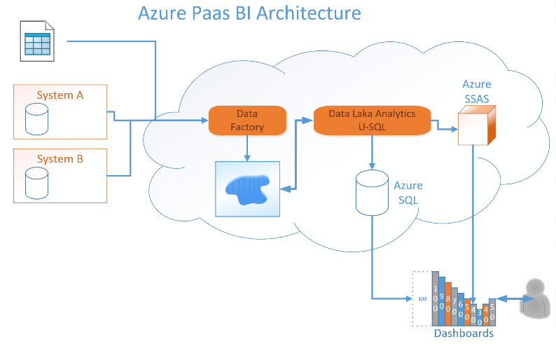

Azure Migration
A large Danish corporation used a traditional Microsoft BI stack to produce daily and monthly reports. The availability of data and self-service tools increased significantly the number of reports generated daily, weekly and monthly. The infrastructure could not provide the required capacity. Reports were refreshed less frequently and end of month processing was carefully planned to allow the reports to be completed on-time.
Hosting was off-shored (IaaS) and difficult to maintain. The company noticed that smaller Azure IaaS hosts were several times faster than their in-house facilities. VMWare and SAN performance were possibly misconfigured but the shortage of specialists made diagnostic and resolution difficult.

Situation
Cloud technology was selected as their future platform. A small day to day footprint with end-of-the-month scaling was advantageous over the current IaaS solution. As the current ETL was using the BI Microsoft Stack, the Azure cloud offerings were selected. It was decided to use a Data Lake to store the data, the Data Factory to ingest the source data and the Data Lake Analytics to replace the ETL in the current landscape. The final goal was to completely eliminate the IaaS hosts.
Technology
The source systems were modified to feed the Data Factory with streams of data. The data was simply stored as large BLOBs in the Data Lake. The CSV and Excel files were also stored as a set of BLOBs.
The SSIS ETL were converted to U-SQL. U-SQL offers a semantic layer that is similar to TSQL.
The result of the ETL were placed in an Azure SQL database and the newly available Azure cube server (SSAS on PaaS). This mechanism was used as nearly all Self-Service dashboard accept these sources of information.
The scheduling of the Data Factory and U-SQL jobs was done using the Azure Scheduler.
Process
A POC with a medium complexity ETL was used to evaluate the complete project length and establish feasibility. Conversion time for such POC was 2 man weeks.
Team
The SSIS team were trained in converting the TSQL code into U-SQL. It takes about 1 day for each developer to learn how to convert TSQL into U-SQL.
Results
The migration is not completed yet but already the performance is fast and stable. The PaaS cost is lower than the IaaS costs and the performance trouble shooting is not required anymore. Several developer resources can now be allocated in building new functionality instead of support activities.